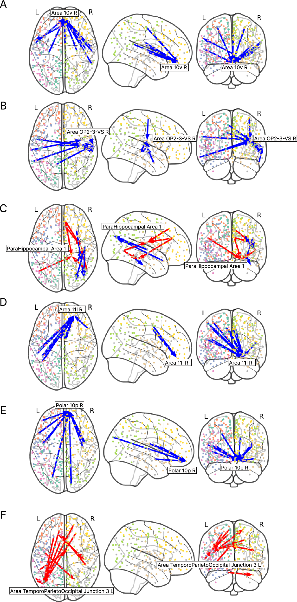
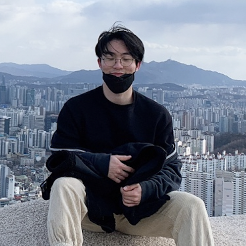
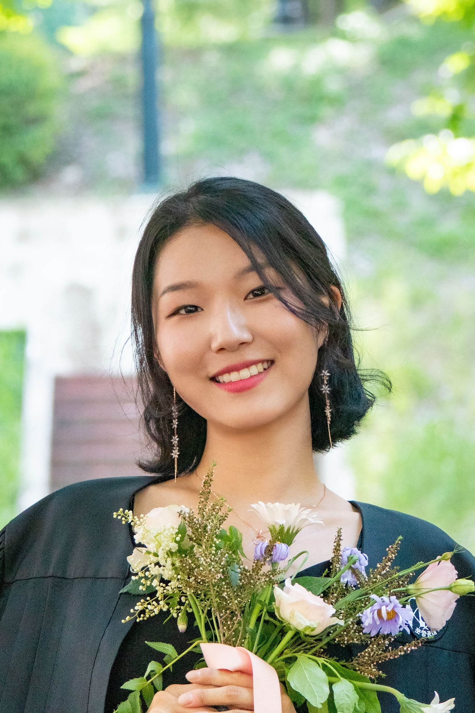
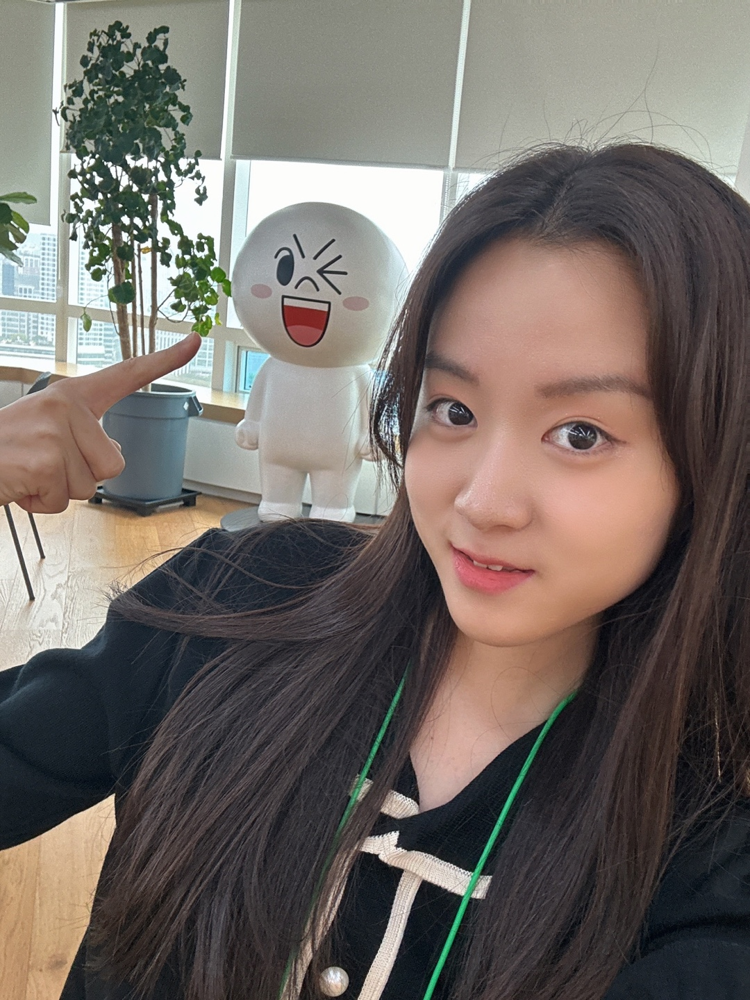
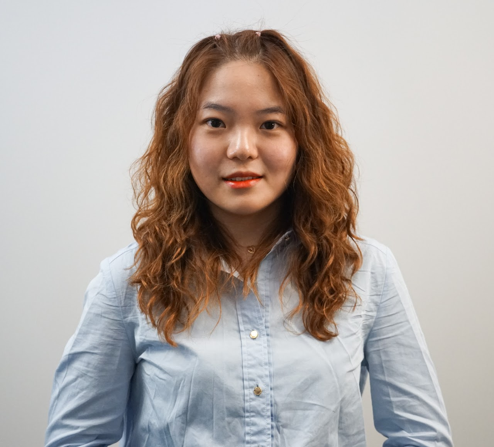
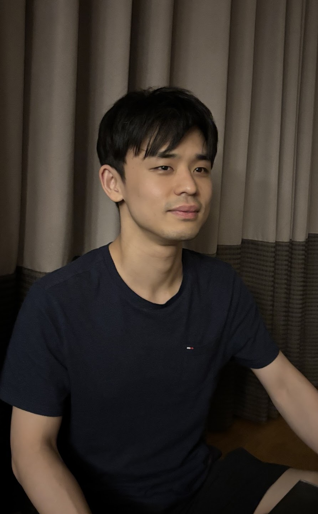
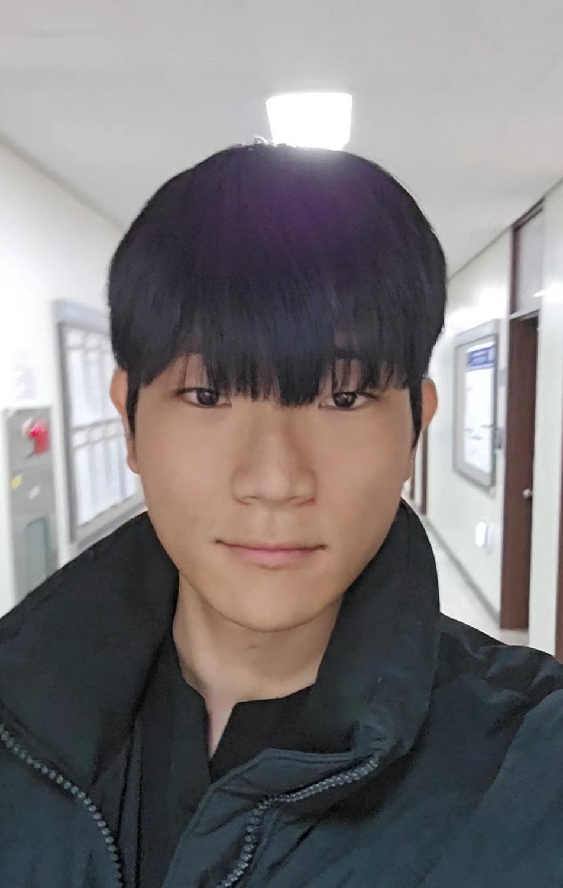
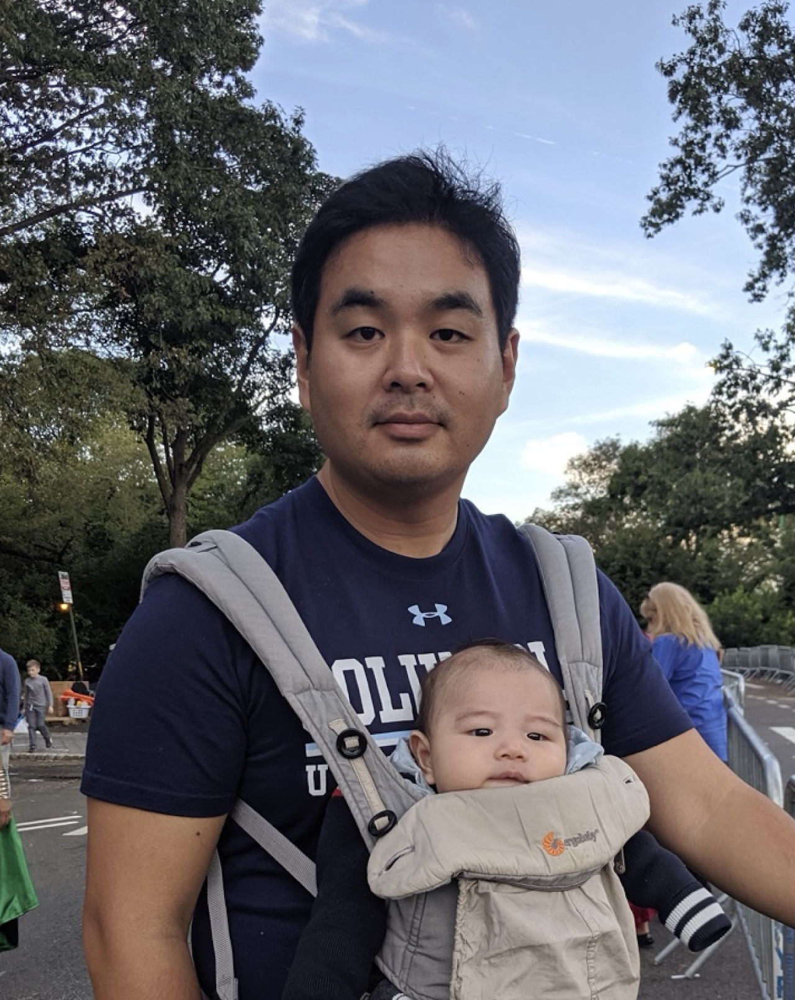
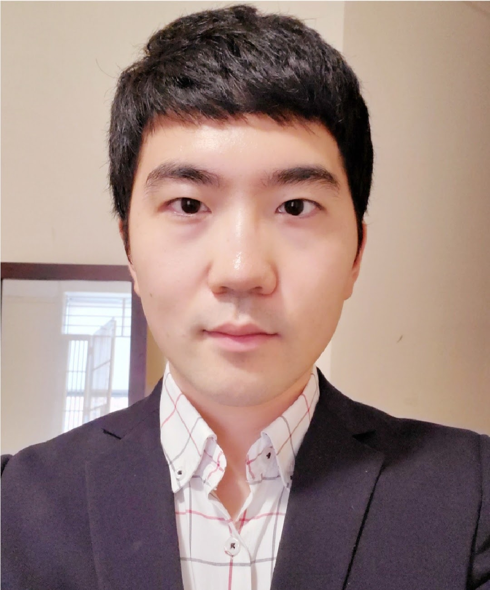

AXIS_01
Neuro-X & Brain Foundation Models
4D fMRI와 고밀도 EEG 시계열로부터 뇌의 보편적 기능 표현을 사전학습할 수 있는가?
우리는 뇌의 100조 개 시냅스 연결망과 4차원 신경 동역학을 최첨단 인공지능과 복잡계 이론으로 해독합니다. 유전자, 뇌 발달, 환경, 기계 지능의 다층적 상호작용을 통해 인간 마음의 근본 원리를 탐구합니다.
모든 층위가 유기적으로 상호 연결되는 4대 연구 축입니다.
4D fMRI와 고밀도 EEG 시계열로부터 뇌의 보편적 기능 표현을 사전학습할 수 있는가?
유전적 소인(PRS)과 환경 스트레스는 청소년기 뇌 피질 발달에 어떻게 상호작용하는가?
양자 컴퓨팅과 고차 위상수학으로 고차원 뇌 연결망의 인과적 다이내믹스를 밝힐 수 있는가?
예술과 내러티브를 경험할 때 발생하는 경외감(Awe)은 뇌에서 어떻게 발현되는가?

단순 통계적 상관관계를 넘어 미세 유전체 발현부터 거시적 피질 연결망까지 통합하는 다중 스케일 생물학적 네트워크 모형을 제안했습니다. (Nature Communications 2025)






A Lee, H Wang, J Cha* et al.
H Wang, D Park, J Cha*
레오나르도 다빈치의 다학제적 통합 명제 아래, 뇌 신경회로, 유전체 다형성, 환경 스트레스, 기계 지능의 다차원 연결성을 계측합니다.
서울대학교 인공지능협동과정(IPAI), 뇌인지과학과(BCS), 심리학과 소속으로 4차원 뇌 파운데이션 모델, 대규모 청소년 코호트, 양자 머신러닝을 융합합니다.
수천 시간의 fMRI 시계열에서 뇌 신경망의 비선형 전이 역학을 지도 없이 사전 학습할 수 있는가?
다유전자 점수(PRS)와 환경 스트레스 지표는 청소년기 뇌 발달 및 정신건강 취약성을 어떻게 예측하는가?
고차원 뇌 커넥톰 공간에서 양자 상태 커널을 활용해 인과적 뇌 구조 탐색이 가능한가?
예술과 내러티브 자극에 노출되었을 때 발생하는 '경외감(Awe)'은 뇌 신경망을 어떻게 재조직하는가?
미세 유전체 발현부터 4차원 뇌 시공간 동역학, 그리고 인간의 정서와 예술적 경외감까지. 우리는 르네상스적 다학제 지성과 최신 파운데이션 모델을 융합하여 뇌의 다중 스케일 연결성을 해독합니다.
수천 시간의 휴지기 및 자연주의 fMRI 시계열에서 신경망의 비선형 궤적을 4차원 트랜스포머(SwiFT)로 사전 학습하여 개인 뇌 식별 및 정신건강 바이오마커를 추출합니다.
신경과학, 인공지능, 심리학, 양자정보학을 아우르는 펠로우 연구진입니다.
우리가 경험하는 세계는 두개골의 칠흑 같은 암흑 속에서 뇌가 직조해내는 '통제된 환각(Controlled Hallucination)'입니다. 피아노 건반의 수는 유한하지만 무한한 멜로디를 직조하듯, 뇌는 태어날 때부터 내부 신경 궤적의 사전(Preconfigured Dictionary)을 품고 있습니다. 그 투사가 세상과 부딪혀 산산조각 나는 순간(Prediction Error) — 그 어긋남의 상처 속에서 비로소 배움과 의식, 그리고 인간의 영혼이 태어납니다.
도스토옙스키의 질문에서 시작하여 뇌의 4차원 시공간 동역학으로 나아가는 지적 여정입니다.
인간의 뇌는 100조 개의 시냅스 연결망과 유전체(PRS)라는 생물학적 기저를 가지고 태어납니다. ABCD 연구의 11,875명 청소년 종단 뇌 영상과 다층적 생물학 네트워크는 환경과의 상호작용 속에서 고통과 회복탄력성이 어떻게 발현되는지를 추적합니다.
어둠 속에서 문 손잡이를 찾듯이 — 뇌는 항상 가설을 던집니다. 슬라이더를 움직여 예측 오차의 강도에 따라 뇌와 영혼이 어떻게 반응하는지 확인해 보십시오.
도파민성 예측오차(RPE) 신호 방출. 조용하던 80~90%의 Precision Brain 뉴런이 긴급 동원되어 내부 모델을 재구성합니다.
기계적 독단과 권태를 깨뜨리는 생명력. 2×2=4의 공식에 안주하지 않고 미지의 세계와 충돌하는 순간입니다.
신경망의 미시적 동역학에서 거시적 인간 고통과 예술적 경외에 이르는 4대 연구 축입니다.
수천 시간의 fMRI 시계열에서 신경망의 비선형 궤적을 4차원 트랜스포머(SwiFT)로 사전 학습하여 개인 뇌 식별 및 정신건강 바이오마커를 추출합니다. 뇌파(EEG)와 융합한 DIVER 모델로 시간의 흐름 속에서 지속되는 자아의 선율을 추적합니다.
ABCD 연구 코호트(N=11,875)를 바탕으로 다유전자 위험 점수(PRS)와 가정·학교·사회 환경이 청소년기 뇌 발달에 미치는 복합적 인과 경로를 규명합니다. 고통과 정신질환의 발생 기저를 해독하여 인간 치유의 토대를 마련합니다.
Glasser 360 고해상도 피질 두께 데이터와 양자 상태 커널(Quantum State Kernels)을 결합하여 대뇌피질의 위상학적 다양체를 탐색합니다. 고전 알고리즘을 뛰어넘는 위상 데이터 분석(TDA)으로 뇌 구조의 숨은 대칭성을 규명합니다.
인간이 웅장한 자연, 문학, 예술에 몰입할 때 일어나는 '경외감(Awe)'의 신경 메커니즘과 기본모드신경망(DMN)의 다이내믹한 해체 과정을 실시간 추적합니다. 고통받는 뇌가 왜 예술과 숭고함에서 구원을 찾는가를 과학적으로 응시합니다.
신경과학, 인공지능, 심리학, 그리고 인문학적 사유가 교차하는 연구진입니다.

서울대학교 심리학과 부교수 및 뇌인지과학과 협동과정 겸무. 컬럼비아 대학교 및 뉴욕 파운틴 하우스 방문 연구원. Inside-Out 신경과학과 복잡계 동역학, 대규모 코호트 인과 추론을 결합하여 인간 마음의 근본 원리를 탐구하고 있습니다.
데이터의 엄밀성과 철학적 깊이를 함께 담아낸 대표 논문들입니다.
우리는 세상의 표준적인 답안지에 만족하지 못하는 사람들, 인간 마음의 심연과 뇌의 정밀한 수학적 아름다움 사이에서 불면의 밤을 보내는 학생과 연구자를 찾습니다. 뇌의 물리 법칙에 경외를 느끼며, 동시에 한 인간의 실존적 고통과 문학적 깊이에 가슴 아파할 줄 아는 분들의 지원을 환영합니다.
우리는 100조 개의 시냅스 연결망과 유전체, 4차원 신경 동역학을 통해 인간 마음의 숨은 기하학을 탐구합니다. 인간을 기계 부품으로 환원하기 위함이 아닙니다. 어둠 속에서 가설을 던지고, 그 가설이 현실과 어긋나 산산조각 나는 순간(예측 오차)에서 어떻게 배움과 회복탄력성, 그리고 숭고한 경외(Awe)라는 영혼이 피어나는가를 묻습니다.
전통적인 신경과학의 외부-내부(Outside-In) 관점은 뇌를 감각 입력을 수동적으로 받아들여 처리하는 카메라로 바라보았습니다. 그러나 실제 뇌는 자극이 주어지기 전부터 내부에서 스스로 발화 궤적을 만들어내는 사전 재생(Preplay)의 동역학을 갖추고 있습니다.
피아노 건반의 수가 88개로 유한하더라도 천문학적인 선율을 낳듯이, 뇌는 태어날 때부터 유한한 시냅스 기저 위에서 무수한 가설의 멜로디를 연주합니다. 우리가 경험하는 현실은 뇌가 칠흑 같은 두개골 속에서 직조하는 통제된 환각(Controlled Hallucination)입니다.
도스토옙스키는 《지하생활자의 수기》에서 자연 법칙과 수학으로 인간을 완전히 계산할 수 있다면 인간은 단지 ‘피아노 건반’이나 기계 부품에 불과하지 않은가라고 절규했습니다. 우리는 이 실존적 긴장을 외면하지 않습니다.
우리가 최첨단 4차원 인공지능과 유전체 코호트로 뇌의 생물학적 건반을 해독하는 이유는, 인간을 한낱 기계로 격하하기 위함이 아닙니다. 오히려 왜 인간은 우울과 고통에 빠지는가, 왜 불합리하게 타인의 슬픔에 공감하는가, 그리고 왜 예술과 광활한 자연 앞에서 자아를 잊고 전율(Awe)하는가라는 가장 깊은 물음에 과학의 언어로 정직하게 답하기 위함입니다.
우리는 계산신경과학의 엄밀성과 인문학적 성찰이 교차하는 지점에서, 인간 마음의 존엄을 밝히고자 합니다.
수천 시간의 안정상태 및 자연주의 fMRI와 고해상도 EEG 시계열을 4차원 트랜스포머(SwiFT)와 동역학 모델(DIVER)로 학습합니다. 정적인 뇌 지도를 넘어, 시간 축 위에서 스스로 가설을 영사하는 뇌의 동적 궤적을 해독하고 개인 고유의 뇌 지문과 정신건강 바이오마커를 추출합니다.
미국 국립보건원(NIH) ABCD 연구의 청소년 11,875명을 10년간 종단 추적합니다. 다유전자 위험 점수(PRS)와 가족 환경, 신경 영상 데이터를 결합한 다층적 생물학 네트워크를 구축하여, 정신건강의 궤적을 단일 유전자가 아닌 시스템적 마찰과 회복의 관점에서 규명합니다.
Glasser 360 영역 기반 고해상도 피질 두께 데이터와 위상 데이터 분석(TDA), 그리고 양자 상태 커널(Quantum State Kernels)을 융합합니다. 고전적 선형 상관관계로는 포착할 수 없는 고차원 뇌 구조 다양체를 기하학적으로 측량합니다.
인위적인 실험실 과제를 넘어, 영화, 음악, 문학적 내러티브에 몰입할 때 일어나는 뇌의 자연스러운 반응을 추적합니다. 자아를 표상하는 기본모드신경망(DMN)이 순간적으로 해체되고 세계와 연결되는 '경외(Awe)'의 신경 메커니즘을 규명하여, 예술적 경험이 어떻게 치유의 힘을 갖는지 연구합니다.
단일 유전자나 뇌의 한 영역만으로는 복잡한 인간의 심리적 고통을 설명할 수 없습니다. 본 연구는 유전체 수준(PRS), 세포 유전자 발현, 구조적 및 기능적 커넥톰의 다층 층위를 하나의 수학적 그래프로 결합하여, 청소년기 환경 스트레스가 어떻게 뇌의 발달 궤적을 굴절시키는지를 최초로 입증했습니다.
Glasser MMP 1.0 파셀레이션을 바탕으로 재구성한 대뇌피질 표면입니다. 피질 두께의 국소적 변화와 구조적 공변화 네트워크(Structural Covariance)를 위상 데이터 분석(TDA)과 양자 커널로 분석하여, 뇌 발달 및 인지 기능 저하의 비선형적 랜드마크를 추출합니다.
컬럼비아 대학교 및 뉴욕 파운틴 하우스 방문 연구원. 계산신경과학, 인공지능 파운데이션 모델, 대규모 종단 코호트 인과 추론을 결합하여 인간 마음의 구조와 정신건강의 역학을 탐구하고 있습니다.

우리는 계산적 엄밀성(컴퓨터과학, 통계학, 인공지능)과 인간 마음에 대한 깊은 호기심(심리학, 인지과학, 뇌과학)을 겸비한 학부 연구생, 대학원생(석사/박사/통합과정), 박사후연구원을 상시 모집합니다. 표준화된 정답에 안주하지 않고, 가설이 부딪히는 예측 오차의 틈새에서 진짜 배움을 추구하는 분들의 연락을 환영합니다.
Seoul National University · Cognitive Neuroscience
우리는 100조 개의 시냅스 연결망과 유전체, 그리고 4차원 신경 동역학을 통해 인간 마음의 숨은 기하학을 탐구합니다. 인간을 기계 부품으로 환원하기 위함이 아닙니다. 어둠 속에서 가설을 던지고, 그 가설이 현실과 어긋나 산산조각 나는 순간(예측 오차)에서 어떻게 배움과 회복탄력성, 그리고 숭고한 경외(Awe)라는 영혼이 피어나는가를 묻습니다.
신경과학의 계산적 엄밀성과 실존적 인문학이 교차하는 지점에서 출발합니다.
전통적인 신경과학의 외부-내부(Outside-In) 관점은 뇌를 외부 세상의 자극을 수동적으로 담는 카메라로 여겼습니다. 그러나 실제 뇌는 자극이 주어지기 전부터 내부에서 스스로 발화 궤적을 연주하는 사전 재생(Preplay)의 동역학을 갖추고 있습니다.
피아노 건반의 수가 88개로 유한하더라도 무한한 멜로디를 직조하듯, 뇌는 태어날 때부터 유한한 시냅스 기저 위에서 끊임없이 가설의 선율을 세상에 영사합니다. 우리가 경험하는 현실은 뇌가 칠흑 같은 두개골 속에서 직조하는 통제된 환각(Controlled Hallucination)입니다.
도스토옙스키는 《지하생활자의 수기》에서 자연 법칙과 수학으로 인간을 완전히 계산할 수 있다면 인간은 단지 ‘피아노 건반’이나 기계 부품에 불과하지 않은가라고 질문했습니다. 우리는 이 실존적 긴장을 피하지 않습니다.
우리가 4차원 인공지능과 대규모 유전체 코호트로 뇌의 생물학적 건반을 해독하는 이유는 인간을 한낱 기계로 격하하기 위함이 아닙니다. 오히려 왜 인간은 깊은 우울과 고통에 빠지는가, 왜 불합리하게 타인의 슬픔에 공감하는가, 그리고 왜 예술과 광활한 자연 앞에서 자아를 잊고 경외(Awe)를 느끼는가라는 가장 깊은 물음에 과학의 언어로 정직하게 답하기 위함입니다.
우리는 계산신경과학의 엄밀성과 인문학적 성찰이 교차하는 지점에서, 인간 마음의 고유한 존엄을 밝히고자 합니다.
모든 층위가 유기적으로 상호 연결되어 마음의 숨은 기하학을 완성합니다.
수천 시간의 안정상태 및 자연주의 fMRI와 고해상도 EEG 시계열을 4차원 트랜스포머(SwiFT)와 동역학 모델(DIVER)로 학습합니다. 정적인 뇌 지도를 넘어, 시간 축 위에서 스스로 가설을 영사하는 뇌의 동적 궤적을 해독하고 개인 고유의 뇌 지문과 정신건강 바이오마커를 추출합니다.
미국 국립보건원(NIH) ABCD 연구의 청소년 11,875명을 10년간 종단 추적합니다. 다유전자 위험 점수(PRS)와 가족 환경, 신경 영상 데이터를 결합한 다층적 생물학 네트워크를 구축하여, 정신건강의 궤적을 단일 유전자가 아닌 시스템적 마찰과 회복의 관점에서 규명합니다.
Glasser 360 영역 기반 고해상도 피질 두께 데이터와 위상 데이터 분석(TDA), 그리고 양자 상태 커널(Quantum State Kernels)을 융합합니다. 고전적 선형 상관관계로는 포착할 수 없는 고차원 뇌 구조 다양체를 기하학적으로 측량합니다.
인위적인 실험실 과제를 넘어, 영화, 음악, 문학적 내러티브에 몰입할 때 일어나는 뇌의 자연스러운 반응을 추적합니다. 자아를 표상하는 기본모드신경망(DMN)이 순간적으로 해체되고 세계와 연결되는 '경외(Awe)'의 신경 메커니즘을 규명하여, 예술적 경험이 어떻게 치유의 힘을 갖는지 연구합니다.
데이터의 엄밀함과 시각적 조형미가 결합된 핵심 발견들의 아카이브입니다.
단일 유전자나 뇌의 한 영역만으로는 복잡한 인간의 심리적 고통을 설명할 수 없습니다. 본 연구는 유전체 수준(PRS), 세포 유전자 발현, 구조적 및 기능적 커넥톰의 다층 층위를 하나의 수학적 그래프로 결합하여, 청소년기 환경 스트레스가 어떻게 뇌의 발달 궤적을 굴절시키는지를 최초로 입증했습니다.
Glasser MMP 1.0 파셀레이션을 바탕으로 재구성한 대뇌피질 표면입니다. 피질 두께의 국소적 변화와 구조적 공변화 네트워크(Structural Covariance)를 위상 데이터 분석(TDA)과 양자 커널로 분석하여, 뇌 발달 및 인지 기능 저하의 비선형적 랜드마크를 추출합니다.
신경과학, 인공지능, 심리학, 그리고 인문학적 질문을 함께 나누는 연구진입니다.
데이터의 엄밀함과 문제의식의 깊이를 함께 담아낸 대표 성과입니다.
우리는 계산적 엄밀성(컴퓨터과학, 인공지능, 통계학)과 인간 마음에 대한 깊은 호기심(심리학, 인지과학, 뇌과학)을 겸비한 학부 연구생, 대학원생, 박사후연구원을 상시 모집합니다. 표준화된 정답에 안주하지 않고, 가설이 부딪히는 예측 오차의 틈새에서 진짜 배움을 추구하는 분들의 연락을 환영합니다.